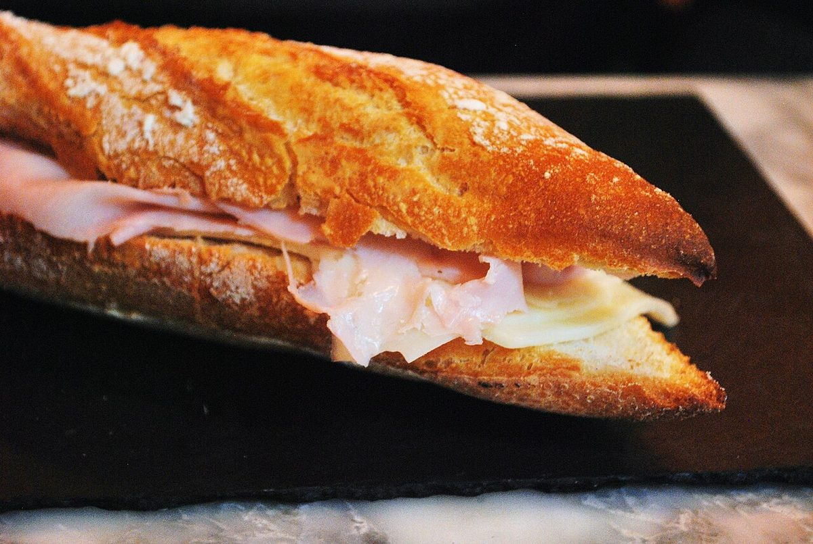
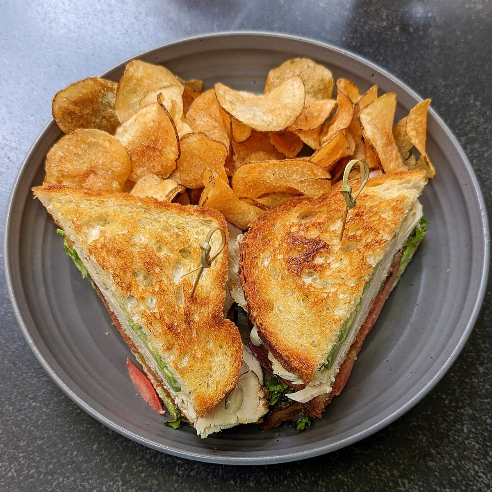
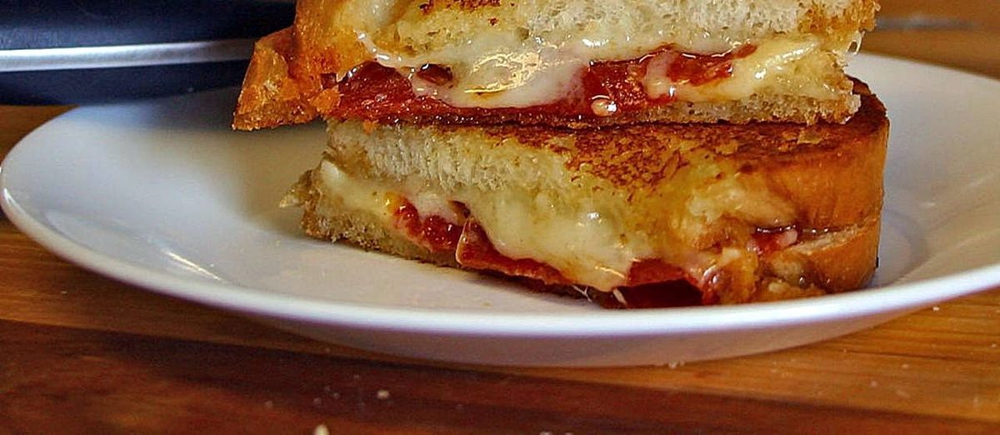
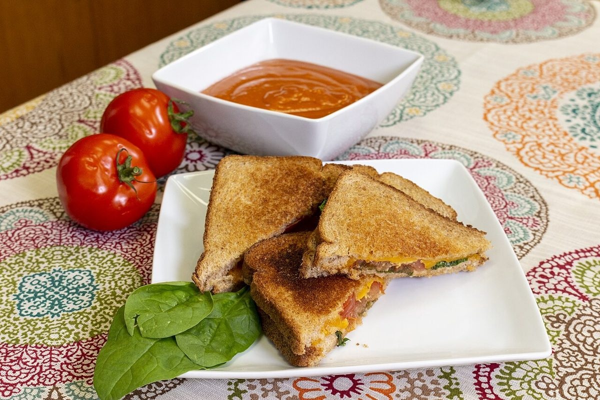
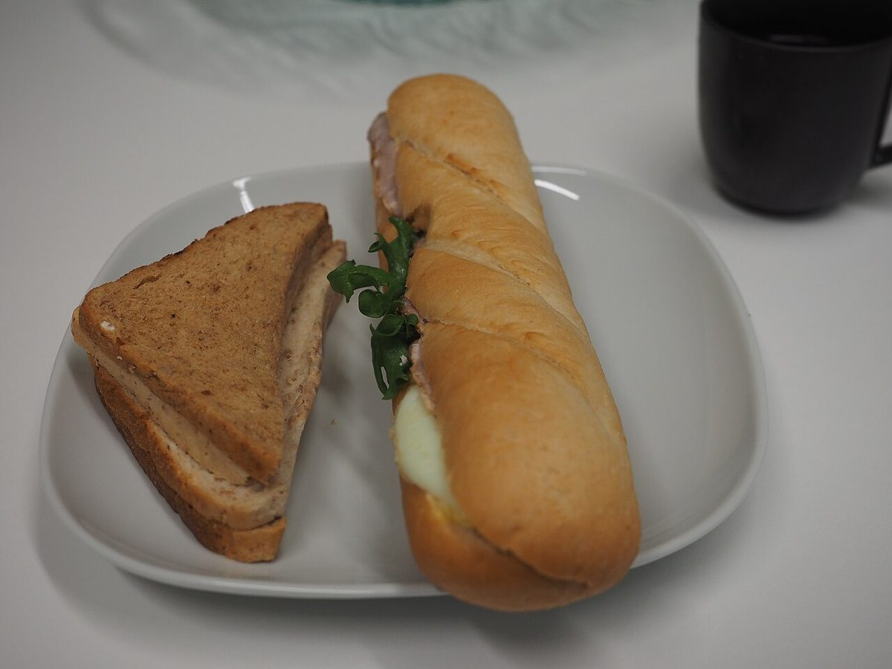
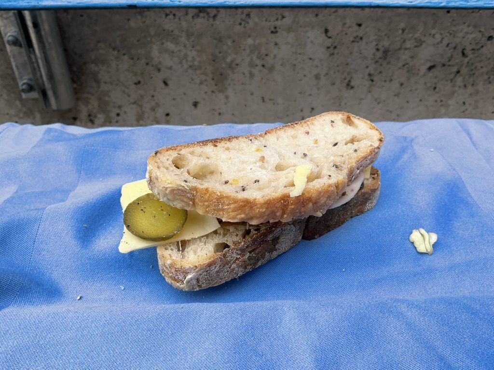
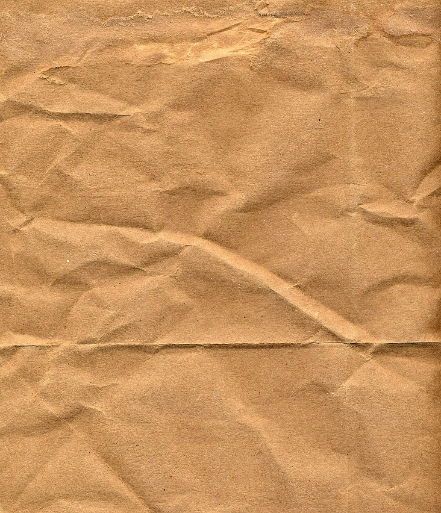
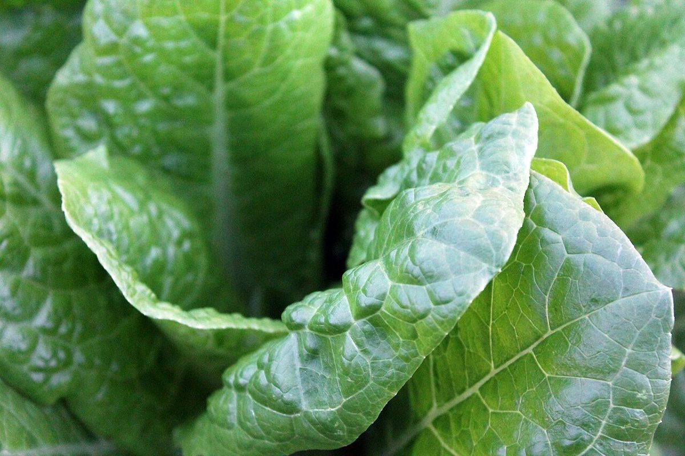
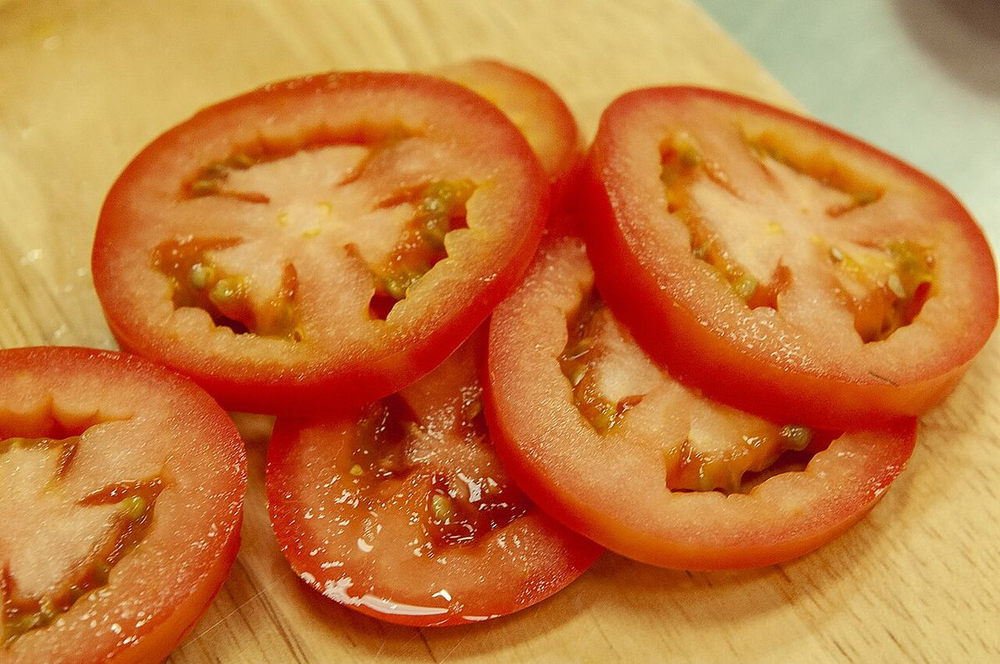
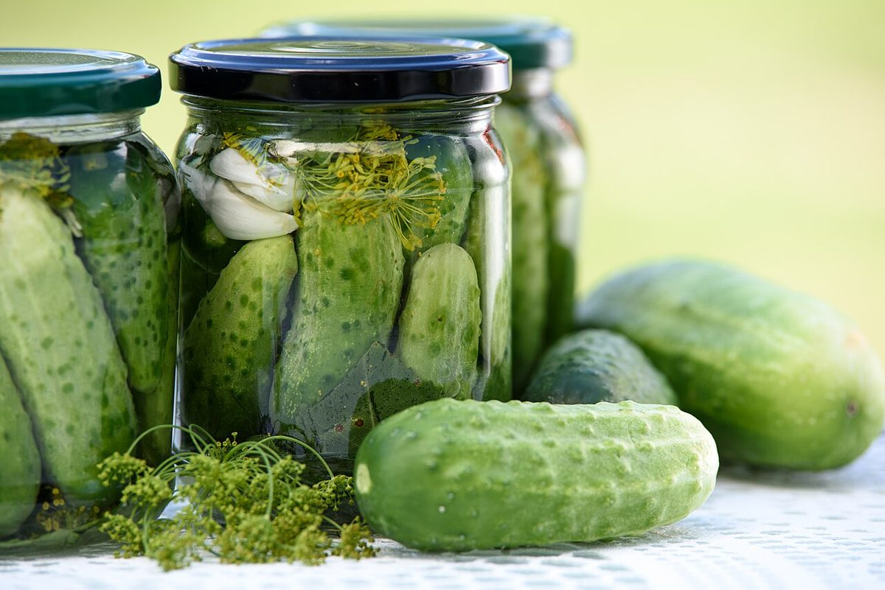

山口県下関市・南部町
ひとつずつ包んで、
持ち歩けるおいしさを。
bon bon cafe 2020は、サンドイッチのテイクアウトを中心にした小さなカフェです。
MENU
包んで渡す、サンドイッチ。
Instagramのプロフィールには「サンドイッチのテイクアウトを中心に営業。小さなお店です。」とあります。具材の種類・価格・提供時間は確認できていないため、下の写真は雰囲気を伝えるフリー素材のイメージです。
| メニュー詳細 | 準備中 |
|---|---|
| 価格 | 準備中 |







写真はフリー素材のイメージで、店舗の実際の様子・商品ではありません。
TAKE OUT
紙に包んで、手のひらへ。
テイクアウト中心という営業スタイルから、制作側が「紙に包んで手渡すサンドイッチ」をイメージして、クラフト紙色を基調にしました(制作側のイメージです)。

VOICE
口コミ イメージ例
以下は制作側が作成したイメージ例で、実在のお客様の声ではありません。
お昼にふらっと寄って、サンドイッチをテイクアウトしました。小さなお店ですが、気軽に立ち寄れます。
パンと具材のバランスが良くて、食べやすい大きさでした。歩きながらでも食べられるのがうれしいです。
おでかけの途中に買って、公園で食べました。コーヒーも一緒に頼めるとさらに良さそうです。
ABOUT
小さなお店の、小さなこだわり。
確認できた事実は次のとおりです。下関市南部町23-16(青木屋ビル1階)にあるカフェで、サンドイッチのテイクアウトを中心に営業している小さなお店です。駐車場はなく、近くにコインパーキングがあるとInstagramに記載があります(出典: Instagram @bonboncafe2020)。
店名の「bon bon」や「2020」の意味、開業の経緯は確認できていないため、ここでは触れません。





写真は食材・飲み物の雰囲気を伝えるイメージです。
ACCESS
アクセス・ご案内
| 住所 | 〒750-0006 山口県下関市南部町23-16 |
|---|---|
| 電話 | 準備中 |
| 営業時間 | 準備中 |
| 定休日 | 準備中 |
| 駐車場 | なし(近くにコインパーキング。Instagramの記載による) |
| @bonboncafe2020 |
最新の営業情報はInstagramをご確認ください。
PHOTO CREDITS
写真クレジット
このページの写真はすべてフリー素材(Wikimedia Commons)のイメージで、店舗の実際の様子ではありません。
- images/sw-deli.jpg|Deli Baguette Sandwich (Unsplash)|petradr petradr|CC0 1.0|撮影地不明
- images/sw-baguette.jpg|Baguette 02|Johann from Munich, Germany|CC BY 2.0|撮影地不明
- images/sw-club.jpg|Turkey club sandwich and potato chips - Cambridge, MA|Daderot|CC0 1.0|米国マサチューセッツ州
- images/sw-cheese.jpg|Grilled cheese sandwiches|Jon Sullivan|パブリックドメイン|撮影地不明(下部を切り抜き)
- images/sw-melt.jpg|Grilled Cheese Surprise with Tomato and Spinach (49164481196)|Alabama Extension|CC0 1.0|米国
- images/sw-triangle.jpg|Triangle sandwiches and baguette at the office|JIP|CC BY-SA 4.0|フィンランド・ヴァンター
- images/sw-pickle-sand.jpg|Ham, Cheese, Pickle Sandwich|TheHolyCessna553|CC0 1.0|撮影地不明
- images/sw-tomato-sand.jpg|Tomato sandwich sliced|Valereee|CC0 1.0|撮影地不明
- images/sw-lettuce.jpg|Lettuce Leaves (Unsplash)|Alfonso Cenname alfonsocenname|CC0 1.0|イタリア・カミリャーノ
- images/sw-tomato.jpg|Sliced Tomatoes|Alabama Extension|CC0 1.0|米国
- images/sw-pickles.jpg|Pickled-cucumbers-1520638|WDnet|CC0 1.0|撮影地不明
- images/sw-kraft.jpg|Brown paper bag texture|Matt Edward|CC BY 2.0|撮影地不明
- images/sw-tinloaf.jpg|Tin Loaf - one slash in the crust|Mike Finn|CC BY 2.0|撮影地不明
- images/coffee.jpg|Café coado|Melsj|CC BY-SA 4.0|撮影地不明
- images/mug.jpg|Bright turquoise mug sits on a wooden table by the window|Shixart1985|CC BY 2.0|撮影地不明
- images/wincup.jpg|Warm coffee cup resting on window sill|Shixart1985|CC BY 2.0|撮影地不明